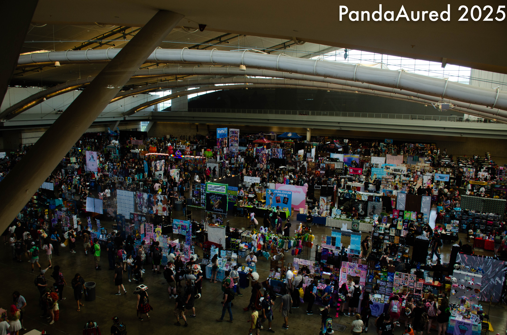

Panel retrospective
On July 4th, I finally was able to realize the event I had been building toward for the last month: I hosted the Transit and Furbanism panel at Anthrocon 2025. Alongside me was Nick, Teg, and Kezl. The talk had 374 registered attendees on Sched and the room was at, if not considerably beyond, the seating capacity for the venue. The panel lost very few attendees as it progressed.
An overview of the presentation#
The talk consisted of four main sections:
-
Transit in Pittsburgh (me): I gave a brief overview of Pittsburgh as a city of industry, discussed its declining population since 1960 and furshadowed (:3) the effects it will have on transit.
-
Furry Civic Pride (Nick): Nick gave a point of comparison between several cities. Lastly, the example of MFF was brought up and contrasted with Anthrocon. Anthrocon is held in the center of a city with many urban amenities and more robust infrastructure, whereas MFF is held in Rosemont, where it is a chore to get to the convention center from a hotel that isn’t main (allegedly, I haven’t been).
-
Urbanism and the Fandom (Teg): Teg outlined three important factors for why urbanism and the fandom can complement each other. They are (1) access and mobility (taking an Uber to the convention center or to get food sucks!), (2) access to local businesses as opposed to chains, and (3) community and culture. (Tangentially, there is a lot of potential in this section to mention things like antisocial behaviors). This section also ended with a leading question which set up the following section: "
-
Furry Planning for Accessibility (Kezl): Kezl gave an account of personal experiences with transit meets being inaccessible by transit in both St. Louis and Cleveland. It turns out that the alienating experience of living without a car as a college student and trying to participate in events that are not accessible is one that causes great dismay among many people, not just transit enthusiasts. True to “be the change you seek”, Kezl helped create transit oriented furmeets in Cleveland, Ohio, a city with 6% transit mode share. Further, as of now, there is a much greater proportion of transit accessible furmeets and the rate of transit use to go to these meets is at 20%, which is ~3x the modeshare of public transit overall in Cleveland.
The ride-along#
After the event, we walked a large group of people from room 316 in the DLLCC to Penn Station on the East Busway! This was by far the most chaotic part of the whole trip: around 60-80 people walked across the third floor of the convention center, down two escalator, and through the loading area to Liberty Ave, turning left and crossing the street at Grant Ave. This is the part of the panel that I think has the most room for improvement; the capacity of the group made it difficult to manage without use of radios until being outside of the center. Once we got to Penn Station, there was a slight hiccup with which direction to turn at the station crosswalk. Aside from that, everything went very well. Nobody had trouble paying their fare and the weather mercifully cooled down when we needed it to.
(Figure 1: Furries on a bus.)
(Figure 2: Furries on the East Liberty Station bridge.)
Post Convention Panel Thoughts#
Anthrocon 2025 was an astounding success from a goal perspective. The panel was a success, the ride-along was a success, and I had plenty of interactions that were transit adjacent throughout the whole convention. I now want to ask myself what I can do that is more novel than this panel, since I know that many people will be going to a transit panel as repeat attendees. I will strive to find engaging and informative topics that remain accessible and interesting to a general audience.
We rehearsed the entire presentation the night before we held it! Perhaps this is too much effort for a furry convention panel, but I like doing things that I’m passionate about well. I almost had us rehearse the route from the room to the outside of the convention center, but it was late at night the day before. Also, we did not have a crowd of people to practice moving between places. So, there was likely not much else we were able to do there.
Post Convention General Thoughts#
This was my favorite Anthrocon to date! I did more than I have done at any prior Anthrocon, I went to more panels (the Data Structures and Algorithms panel was really fun!), I participated in more panels (had to represent at the University Furs panel), and I hung out with friends much more than at previous conventions. Of course, it wasn’t perfect, and there is always more I can do to make the next convention better.
 (Figure 3: Furries and art in the Dealer’s Den.)
The slides are available here.
Thank you so much for making this event great! Love, Aured.